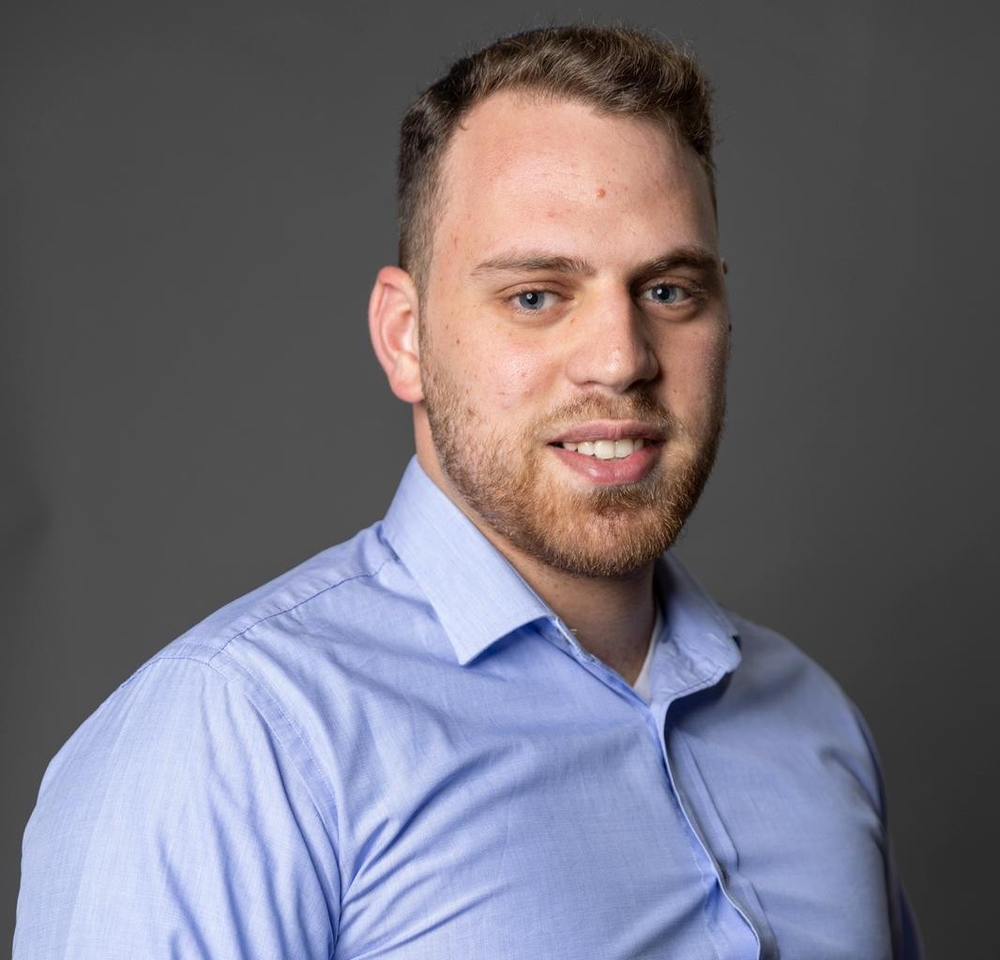

Uriah Shraga
Third-year law student with hands-on experience in the courtroom and the prosecutor's office. I combine rigorous legal research and writing with leadership experience gained in student government and in the IDF.

Experience
Judicial Clinic: Law and Adjudication in Practice
Working directly alongside the judge on tort cases: reading and analyzing pleadings, expert opinions and case files; conducting legal research in case law and legal literature; and drafting decisions and judgments. Attending hearings, including evidentiary hearings, and gaining in-depth knowledge of civil procedure and judicial decision-making.
Editorial Board Member
Substantive and structural editing, and writing comprehensive review reports on articles accepted for publication.
Teaching Mentor, "Introduction to Israeli Law"
Teaching sessions on the foundations of law, and mentoring and supporting first-year law students individually.
Excellence Program
Enrichment program for outstanding students, offering exposure to legal practice and weekly lectures.
Coordinator, Student Defenders Program
Coordinated the student defenders who represent students in disciplinary proceedings and in matters before the college administration. Responsible for recruiting and training defenders, assigning cases and overseeing their handling.
Criminal Law Clinic
Worked closely with a prosecutor on complex criminal cases, helping build the evidentiary and legal record. Conducted research in case law and legislation, and drafted documents and pleadings.
Legal Podcast
Initiating, researching, writing and hosting episodes that make legal issues accessible to a general audience. The first episode focused on tort law.
Law Program Student Representative
Representing law students before the faculty and the school's administration. Working with lecturers on academic matters and student requests, gathering student needs, forming positions and bringing them to resolution with the relevant decision-makers.
CEO, Student Union
Managed the union's day-to-day operations and its organizational, operational and financial areas. Led negotiations with the college administration, from forming positions to reaching agreements. Led a reform of the union's budget and renewed the dialogue with the administration. Worked regularly with local government and other academic institutions.
Exam Prep Marathons for Law Students
Designed study materials and taught exam marathons in core courses: Constitutional Law, Contracts, Torts, Criminal Law and Corporate Law.
Independent Event Manager
Producing events end to end: defining client needs, planning and budgeting, negotiating and contracting with vendors, and leading the team on the day. As head waiter and deputy event manager at Kadita Hall, I lead dozens of staff and solve problems in real time under pressure while keeping quality high.
Outstanding Squad Commander
Graduated the squad commanders course with distinction; served as assistant intelligence officer in the Bislach Brigade. Fought in the Swords of Iron war. In the reserves, took part in Operation Roaring Lion and Operation Rising Lion.
Education
LL.B in Law, Third Year
Projects & Volunteering
Legal Podcast
A podcast with Prof. Roy Gilbar that makes legal topics accessible to the public, from research and scripting to hosting.
"We Are Tomorrow" NGO
Building programs that prepare youth in Israel's periphery for military service and help them advance, including activities and information centers. 2026 – Present
Leadership Program Fellow
Kol Israel Haverim & Mimizrach Shemesh, "Planted in Education" program: enrichment lectures and leadership workshops. 2025 – Present
Tutoring Reservist Students
Teaching assistant and private tutor for students serving in the reserves. 2025 – 2026
Talks for Teens
Lectures to high school students on the value of military service and academic studies. 2025 – 2026
Student Budget Reform
As Student Union CEO, led a reform of the union's budget and renewed its working dialogue with the college administration.
Skills
Legal
Leadership
Tools & Languages
Let's Connect
I'm always happy to talk about internships, legal research and new opportunities.
Uriahshraga2002@gmail.com